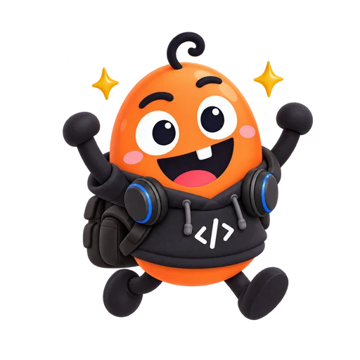

DKDLQODDI · AI STRATEGY
설계 AX
전환
프롬프트 엔지니어링에서
Harness 엔지니어링으로
프롬프트 → 작업 환경

상반된 AI 모델 경험
그림 설명: 상용 모델은 단순 지시에도 잘 동작하지만, 오픈소스 모델은 오동작하거나 맥락을 잊어버리는 모습을 비교.
해결책: 프롬프트 엔지니어링
그림 설명: 오픈소스 모델의 한계를 극복하기 위해 세부 지침과 동작 예시(Few-shot)를 결합하여 견고한 프롬프트를 주입하는 구조.

패러다임 전환: Harness Engineering
그림 설명: 단순한 텍스트 프롬프트를 넘어 시스템 룰, 도구, 가이드레일이 모델을 묶어내는(Wrapping) 구속구(Harness) 구조로 진화.
텍스트 기반의 프롬프트가 Agentic AI 아키텍처 내에서 형식화된
시스템 구성요소(Harness Engineering)로 발전했습니다.
